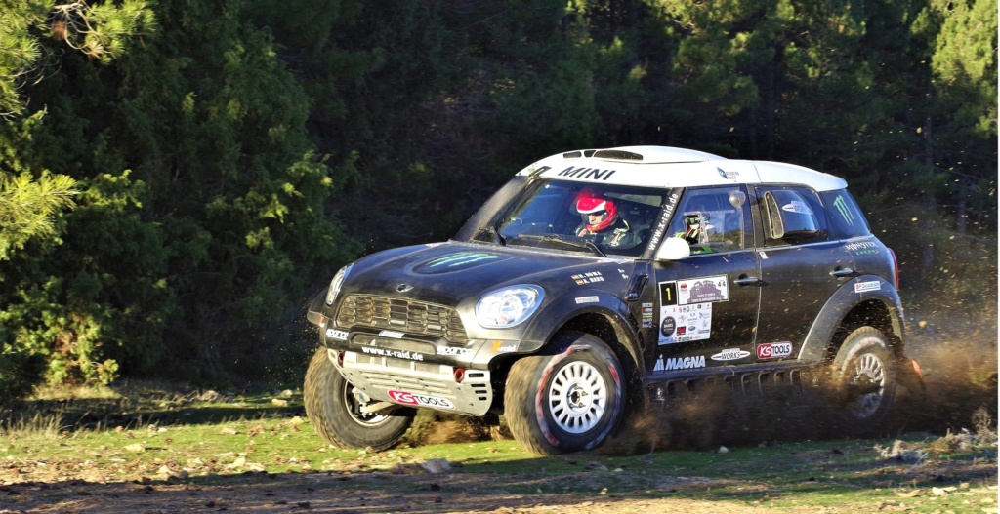

Los equipos de Grecia, Italia, Hungría, Polonia y Portugal podrán tomar parte en la prueba inaugural de la Copa Europea de Bajas 2026. La carrera también es puntuable para el Campeonato de España de Rallyes TT, el Campeonato de España de Motos, y el Campeonato de Castilla La Mancha de Rallyes Todoterreno. Los miles de seguidores de la Copa Europea de Bajas y del Campeonato de España, podrán disfrutar de los cielos de la Serranía conquense que acaban de ser declarados Destino Turístico Starlight avalado por la UNESCO.
A falta de de unos días para que se cierre oficialmente el periodo de inscripciones, la Organización de la carrera sigue trabajando a marchas forzadas en su compromiso de cuajar una raid excelente. Y a menos de un mes para que arranque la carrera, pasado mañana miércoles, finalizará el tiempo para que los equipos de coches puedan inscribirse, tanto en la primera cita de la Copa Europa de Bajas, como en el Campeonato de España de Rallyes TT donde este año Cuenca será la tercera de las siete pruebas que conforman el nacional. Por su parte, el viernes dará por concluido el plazo de inscripción para motos. La cita internacional y nacional discurrirá por la extensa red de pistas forestales, caminos agrícolas y caminos ganaderos de las que disfruta esta rica zona castellano manchega, uno de los paraísos naturales de nuestro país. Y dentro de este área natural, el epicentro estará en potente Serranía de Cuenca donde el Parque Astronómico de la Serranía de Cuenca acaba de ser declarado Destino Turístico Starlight. Esta distinción, avalada por la UNESCO, es un sello de calidad del cielo que solo poseen aquellos lugares del mundo en los que es posible observar el firmamento en todo su esplendor.Así que este paisaje y este cielo, harán el deleite de los equipos y de los miles de visitantes que llegarán a Cuenca con motivo del rallye. Cuenca es el escenario perfecto para la primera carrera europeaEn este sentido, Víctor Alijas, el organizador de la prueba espera que, “los deportistas, los aficionados y los visitantes disfruten con la orografía de Cuenca porque es natural, exigente y espectacular a partes iguales. Pocas provincias ofrecen un terreno tan variado y un paisaje tan espectacular y eso convierte a Cuenca en un escenario perfecto para el raid.” La cita cuenta con el patrocinio oficial de la Junta de Comunidades de Castillala Mancha, el Ayuntamiento de Cuenca y la Diputación de Cuenca, y sedisputará del 7 al 10 de mayo.